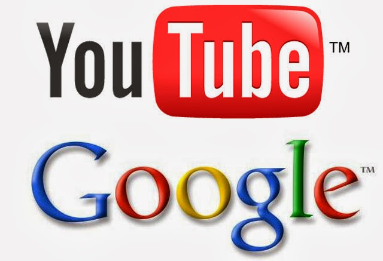
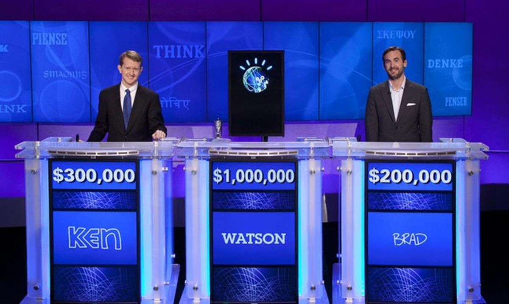

| Evolución de las aplicaciones web. |
| Hitos |
Años |
Hechos |
Imágenes |
Referencias |
| web 1.0 |
1990 |
En 1990, Tim Berners-Lee creó el primer navegador web y el primer servidor web, sentando las bases para la World Wide Web. Algunos detalles adicionales sobre este evento son:
El navegador web creado por Tim Berners-Lee se llamaba "WorldWideWeb" y fue desarrollado en la computadora NeXT.
Este navegador permitía a los usuarios acceder a documentos en línea a través de hipervínculos.
El primer servidor web, llamado "httpd", también fue creado por Tim Berners-Lee y se ejecutaba en la misma computadora NeXT. |
|
|
| 1993 |
En 1993, se lanzó el primer navegador gráfico, Mosaic, que permitía la visualización de imágenes y texto en una misma página. Aquí tienes más información sobre este hito:
Mosaic fue desarrollado por un equipo de programadores en el National Center for Supercomputing Applications (NCSA) de la Universidad de Illinois.
Este navegador fue el primero en popularizar la navegación web mediante una interfaz gráfica de usuario, lo que facilitó la visualización de contenido multimedia en línea. |
 |
| 1995 |
En 1995, se fundó eBay, uno de los primeros sitios web de comercio electrónico, que marcó el inicio de las transacciones en línea a gran escala. Aquí tienes más detalles sobre este acontecimiento:
eBay fue fundado por Pierre Omidyar y originalmente se llamaba AuctionWeb.
El sitio web permitía a los usuarios comprar y vender una amplia variedad de productos a través de subastas en línea.
eBay fue pionero en el comercio electrónico y sentó las bases para el crecimiento de las transacciones en línea, abriendo nuevas oportunidades para los vendedores y compradores en todo el mundo. |
|
| web 2.0 |
2004 |
En 2004, se lanzó Facebook, una de las primeras redes sociales que permitía a los usuarios compartir contenido y conectarse con otros de manera más interactiva. Algunos detalles adicionales sobre este acontecimiento son:
Facebook fue fundado por Mark Zuckerberg, Eduardo Saverin, Andrew McCollum, Dustin Moskovitz y Chris Hughes.
Inicialmente, Facebook estaba destinado a ser una plataforma exclusiva para estudiantes de la Universidad de Harvard, pero luego se expandió a otras universidades y finalmente se abrió al público en general.
La popularidad de Facebook creció rápidamente y se convirtió en una de las redes sociales más utilizadas en todo el mundo, con millones de usuarios registrados. |
 |
| 2005 |
En 2005, se introdujo el término "Web 2.0" en la conferencia O'Reilly Media Web 2.0, que enfatizaba la interactividad y participación del usuario en la web. Aquí tienes más información sobre este concepto:
El término "Web 2.0" fue acuñado por Dale Dougherty y Craig Cline durante una sesión de lluvia de ideas en la conferencia O'Reilly Media Web 2.0.
Web 2.0 se refiere a una nueva generación de sitios web y aplicaciones que permiten a los usuarios participar activamente, compartir contenido y colaborar en línea. |
|
| 2006 |
En 2006, Google adquirió YouTube, lo que marcó un hito en la popularización de la transmisión de videos en línea y el contenido generado por el usuario. Algunos detalles adicionales sobre esta adquisición son:
Google adquirió YouTube por una suma de 1.65 mil millones de dólares en acciones.
YouTube, fundado por Chad Hurley, Steve Chen y Jawed Karim, se convirtió en una de las plataformas de transmisión de videos más populares y exitosas en línea. |
 |
| web 3.0 |
2010 |
A partir de 2010, el auge del "big data" y el análisis predictivo comenzó a influir en el desarrollo web. Esto permitió una mayor personalización en los servicios en línea. El "big data" se refiere a conjuntos de datos muy grandes o complejos que no pueden ser procesados por los métodos tradicionales. El análisis predictivo utiliza algoritmos y técnicas para predecir eventos futuros o comportamientos basados en datos históricos. |
|
| 2011 |
En 2011, IBM Watson, un sistema de inteligencia artificial desarrollado por IBM, participó en el concurso de preguntas y respuestas Jeopardy! y ganó contra dos campeones humanos. Esta victoria demostró el potencial de la inteligencia artificial en la web y su capacidad para comprender y responder preguntas de manera similar a los seres humanos. IBM Watson utiliza técnicas de procesamiento del lenguaje natural y aprendizaje automático para analizar grandes cantidades de información y proporcionar respuestas precisas. |
 |
| 2015 |
En 2015, se popularizó el término "Internet de las cosas" (IoT). Esto se refiere a la interconexión de dispositivos físicos a través de internet, lo que permite la comunicación y el intercambio de datos entre ellos. Esta interconexión ha dado lugar a aplicaciones web más integradas con el entorno físico. Por ejemplo, los dispositivos domésticos inteligentes, como los termostatos y las cerraduras de puertas controladas por internet, permiten a los usuarios controlar y monitorear sus hogares a través de aplicaciones web. El IoT ha abierto nuevas posibilidades en áreas como la domótica, la salud, la industria y el transporte. |
 |